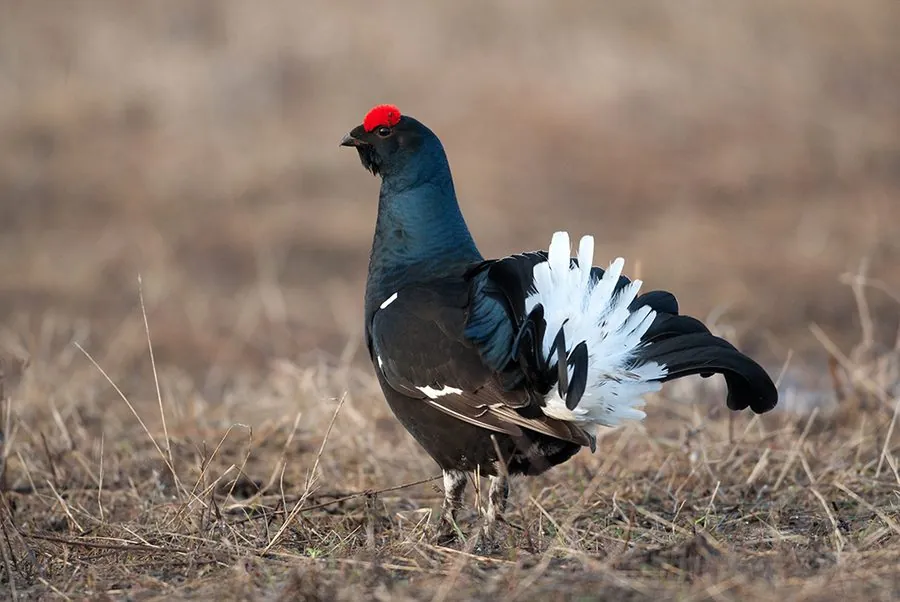

鸟类 · 动物界
黑琴鸡 Lyrurus tetrix

欧亚大陆北方的松林雉类，雄鸟通体乌黑、尾羽向外卷曲如琴，春季会聚集在求偶场上展开激烈的炫耀和争斗。
- 分类
- 门脊索动物门纲鸟纲目鸡形目科雉科属琴鸡属
- 栖息环境
- 北方针叶林、针阔混交林、森林草原和泥炭沼泽边缘
- 地理分布
- 欧亚大陆北部，中国东北、内蒙古和新疆北部有分布
- 保护级别
- IUCN 无危（LC）；中国国家二级保护动物
物种志
黑琴鸡雄鸟体长 49–67 cm，体重约 1–1.5 kg。它的全身羽毛乌黑，泛蓝绿色金属光泽，翅膀上有白色翼斑，尾羽向外侧卷曲如一架竖琴，因此得名；眼睛上方有红色肉冠，喉部羽毛在求偶时膨胀。雌鸟体长 40–45 cm，通体棕褐色并密布黑色横斑，羽色低调。
黑琴鸡分布于欧亚大陆北部的针叶林、混交林和森林草原，中国东北、内蒙古和新疆北部有分布。它们以桦树、松树的嫩芽、花序和浆果为食，冬季常在雪洞里过夜。春季是黑琴鸡的求偶季节，雄鸟会聚集在固定的求偶场上，鼓起喉部、展开尾羽、发出咕咕的叫声并互相争斗，以争夺雌鸟。繁殖期雌鸟在地面产卵 6–10 枚，孵化约 24–27 天。由于森林砍伐和过度狩猎，部分地区的种群下降，中国将其列为国家二级保护动物。
形态与习性
- 食性桦树和松树的嫩芽、花序、浆果，也吃昆虫
- 体长雄鸟 49–67 cm，雌鸟 40–45 cm
- 体重雄鸟约 1–1.5 kg
- 繁殖每窝 6–10 枚卵，孵化约 24–27 天
- 寿命野外约 8–10 年
- 求偶场春季雄鸟聚集在固定的求偶场上炫耀打斗
- 尾羽外侧尾羽向外卷曲如竖琴
趣味知识
- 黑琴鸡的尾羽向外卷曲，形状像一架竖琴，名字由此而来。
- 春季雄鸟会聚集在固定的求偶场上炫耀、打斗，争夺配偶。
- 冬季黑琴鸡会钻进雪洞里过夜，靠雪层保温。
- 雌鸟羽色棕褐并带黑斑，与雄鸟乌黑的羽色差别很大。